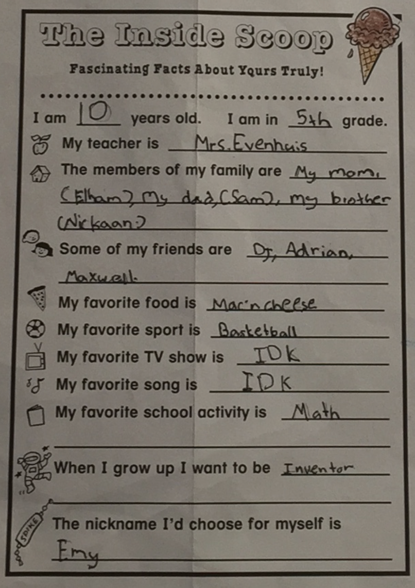

Emaan Heidari Homepage ©

About
I'm 20 and studying computer engineering + CS at USC. I build high-throughput + low-latency systems software.
I'm interested in AI infrastructure, especially runtimes, training infrastructure, inference optimization, and model serving.
I've worked on edge systems across drone autonomy, rocket engine data acquisition, and AI accelerator firmware, and I'm currently writing Rust systems software as a SWE intern at Tesla.
Some things I've built
Drag around this tetrahedron. Try to count the number of faces.
Experience
- Tesla: SWE intern, Energy systems software. (Rust, Go)
- USC Liquid Propulsion Lab: data acquisition and controls for a liquid bipropellant engine + feed system. (C++)
- SiFly: drone autonomy systems, simulation framework. (Python, C++)
- TandemLaunch: analog AI accelerator infra. (Python, C++)
Random
Things I like
Card/board games, roller coasters, non-Euclidean geometry, the ocean, fire, hiking, reading, and thinking.

still mostly accurate
Quotes I like
- "The rules of go are so elegant, organic, and rigorously logical that if intelligent life forms exist elsewhere in the universe, they almost certainly play go." - Edward Lasker
- "I've suffered a great many catastrophes in my life. Most of them never happened." - Mark Twain
- "If I have seen further it is by standing on the shoulders of giants." - Isaac Newton
- "If the human brain were so simple that we could understand it, we would be so simple that we couldn't." - Emerson M. Pugh
- "Every man carries the whole form of the human condition within him." - Montaigne
- "I have not failed. I've just found 10,000 ways that won't work." - Thomas Edison
- "What I cannot create, I do not understand." - Richard Feynman
- "Nature uses only the longest threads to weave her patterns, so each small piece of her fabric reveals the organization of the entire tapestry." - Richard Feynman
- "The details are not the details. They make the design." - Charles Eames
- "Premature optimization is the root of all evil." - Donald Knuth
- "Be so good they can't ignore you." - Steve Martin
- "If you can't explain it to a six year old, you don't understand it yourself." - Albert Einstein
- "Your soul takes on the color of your thoughts." - Marcus Aurelius
- "We can be knowledgeable with other men's knowledge, but we cannot be wise with other men's wisdom." - Montaigne
- "A candle never loses any of its light while lighting up another candle." - Rumi
- "The most incomprehensible thing about the world is that it is at all comprehensible." - Albert Einstein
- "I can calculate the motion of heavenly bodies but not the madness of people." - Isaac Newton
- "If people do not believe that mathematics is simple, it is only because they do not realize how complicated life is." - John von Neumann
- "All of humanity's problems stem from man's inability to sit quietly in a room alone." - Blaise Pascal
- "What was scattered gathers. What was gathered blows away." - Heraclitus
- "The art of knowing is knowing what to ignore." - Rumi
- "I have had my results for a long time: but I do not yet know how I am to arrive at them." - Carl Friedrich Gauss
- "I do not think there is any thrill that can go through the human heart like that felt by the inventor as he sees some creation of the brain unfolding to success." - Nikola Tesla
Last fiddled: June 2026.